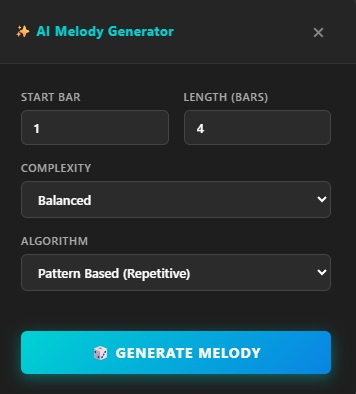
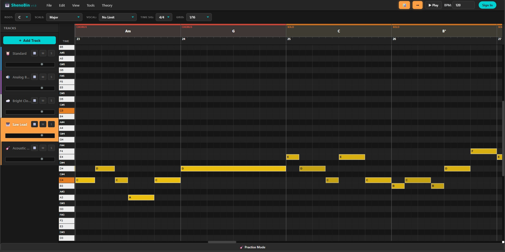
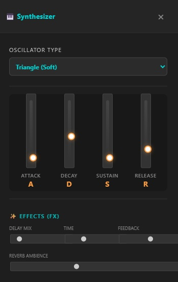
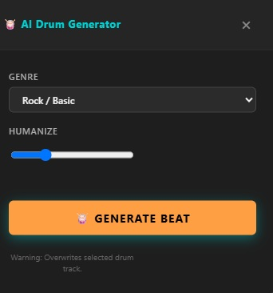
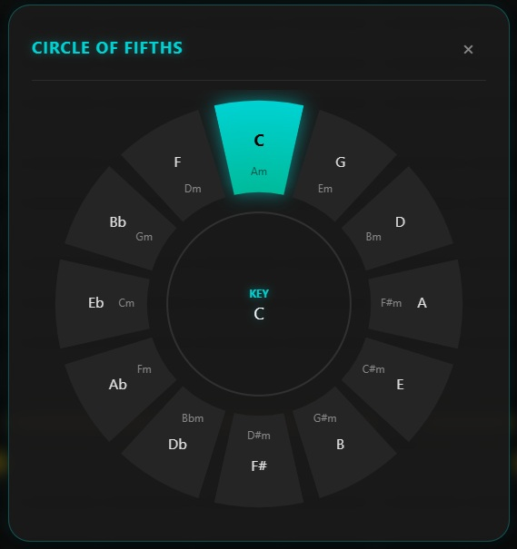
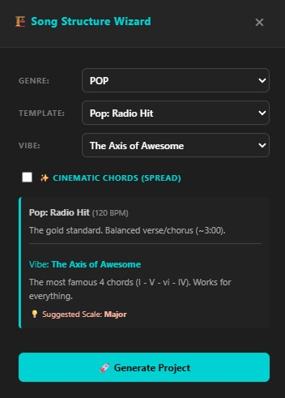
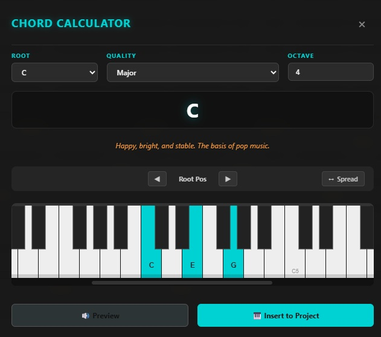
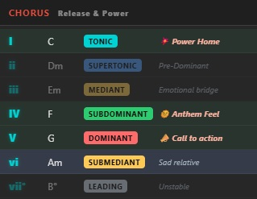
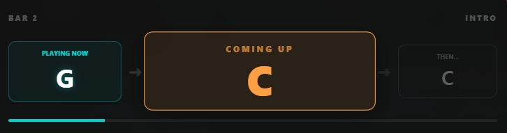
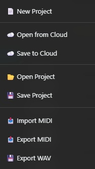

Melody Generator
Enter a few notes and the Markov-based engine follows your melodic patterns to suggest new continuations.
ShenoBin brings music learning and creative production together. Compose melodies, explore chords, and build drum patterns you can hear right in your browser.

From sketching the first notes to shaping an arrangement and exporting your work.

Enter a few notes and the Markov-based engine follows your melodic patterns to suggest new continuations.

Shape your sound with ADSR envelopes, several oscillator waveforms, and built-in delay and reverb effects.

Choose a style such as rock, trap, or techno, generate a rhythm, and adjust its dynamics and feel.

Explore relationships between keys with the Circle of Fifths and see matching notes in the piano roll.

Arrange sections into a song outline and use genre templates and starting points to develop an arrangement.


Calculate and invert chords, then explore harmonic directions with suggestions in the selected key.
See the current chord and what comes next while you play along with a piece.
Save projects locally as JSON or use cloud storage to access your ideas again.
Continue working with MIDI in tools such as Ableton or FL Studio, or render an audio WAV file.


Explore the ShenoBin code, contribute ideas, or report an issue in the project repository.